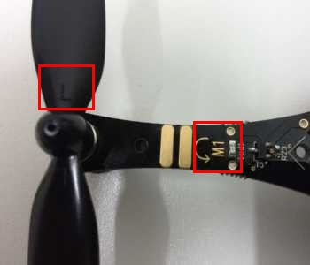
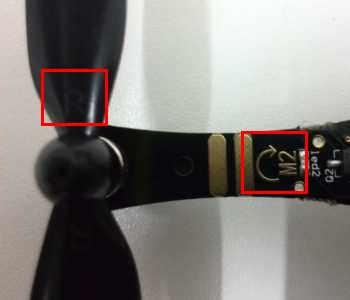
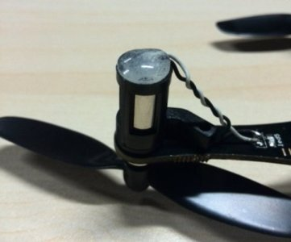
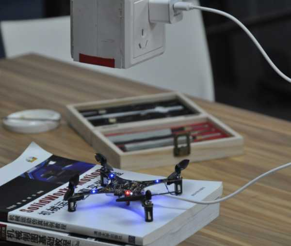

本教程適合Crazepony-II 5.1版本
四軸飛行器的槳葉分為兩種，正槳和反槳。安裝的時候不能夠搞混淆。槳葉上標示有R的安裝到M2，M4兩個機臂的電機上。標示有L槳葉安裝到M1，M3兩個機臂電機上。
 
發貨清單中有黑色和透明兩種硅膠墊，用於緩衝飛機降落時的撞擊，並且起到保護電機線的作用，請自行選擇一種安裝。效果如下圖所示。

你拿到Crazepony的包裹的時候，需要自行安裝遙控器搖桿帽，沒有左右之分。
將2.4G模塊安裝到遙控器上的排針插座上。模塊方向向外。
注意：默認飛行模式為無頭、定高飛行模式（飛機記錄起飛的方向，飛行過程中，飛機響應搖桿的方向，始終以起飛時的方向為準，即俯仰角打前，飛機就往前飛，沒有機頭機尾的區別）
官網下載app，並且安裝。
注意：用app操作時，飛行模式需要手動設置，即需要點定高和無頭才能實現相應的功能
遙控和app控制，都支持失控自動降落功能，控制距離建議不要大於20米，最好在室內練習熟練以後再去室外飛
Crazepony的4個臂膀各有一個藍色的LED。我們規定了部分LED閃爍的方式（燈語），用於指示飛機的狀態。燈語分為指示類型和異常類型，指示類型用於開發和調試，異常類型則必須要處理才能夠使用飛機。
4個LED旋轉狂閃（異常燈） 未接收到遙控信號。解決辦法，開啟遙控器。如果開啟遙控器未能解決，則需要先開啟遙控器，再開啟飛機重試（重燒固件時會遇到）。
M1 M2和M3 M4交替閃爍（異常燈） IMU未校準提示，需要將飛機水平放置地面上，按遙控器上“-”號鍵（或者APP上的校準按鈕）進行IMU校準。
4燈快閃（異常燈） 低電壓提示，需要充電。
M1 M2常亮（提示燈） IMU啟動中
M1 M2快閃（提示燈） 正常工作
M1臂上的LED燈會閃爍8次（提示燈） 配置藍牙模塊，機身的M1臂上的LED燈會閃爍8次，這裡是在檢測藍牙模塊是否正常；如果藍牙設備波特率不是設定值（115200），那麼會進入寫藍牙設備名，寫波特率，寫PIN碼的邏輯，M1,M3和M2，M4臂上的燈會交替閃爍，配置藍牙參數成功後，四個燈一起點亮1秒
機身的M1和M2臂上的燈會常亮3秒（提示燈） 機身的M1和M2臂上的燈會常亮3秒，此時校準陀螺儀
飛機的四個機臂LED同時出現快速閃爍，則表示飛機電池需要充電。將飛機開關撥到Charge位置，連上usb線則可以充電。可以使用電腦，充電寶，手機充電器等為飛機進行充電。

充電時紅色LED亮起，滅掉的時候則表示充電完成。
答：美國手。也就是說左手搖桿負責油門和偏航，右手搖桿負責俯仰和橫滾。左手搖桿上下為油門控制，左右是偏航控制；右手搖桿上下為俯仰控制，左右為橫滾控制
有必要科普下什麼是日本手：左手搖桿負責俯仰和偏航，右手搖桿負責油門和橫滾。是不是很彆扭？將俯仰和橫滾的控制分離開這種設計太反人類了個人覺得，但是它就是這樣一個標準沒辦法，日本人通常都會做些我們難以理解的事大家都知道的。
答：這麼說吧，正常情況下100次起落，都不會對飛機造成任何物理結構上不可逆的毀壞。那麼，電機臀部被戳穿這種事情，屬於飛機臉先著地的意外，他的臀部是被那根軸頂穿的，空心杯電機其實很脆弱，這個我沒辦法控制，我已經盡力了。我看了國內的那些用空心杯電機的小四軸，好像都有這個問題...所以，大家提高飛行技術，是對Crazepony最直接的保護。當然，電機壞了，這種事情太好處理了，多準備些空心杯電機，只要主板沒壞，隨便怎麼折騰都可以...
答：小夥伴在拿到四軸飛行器試飛的時候，遇到無法垂直起飛的問題，可以從下面4個方面循序漸進，依次改進。